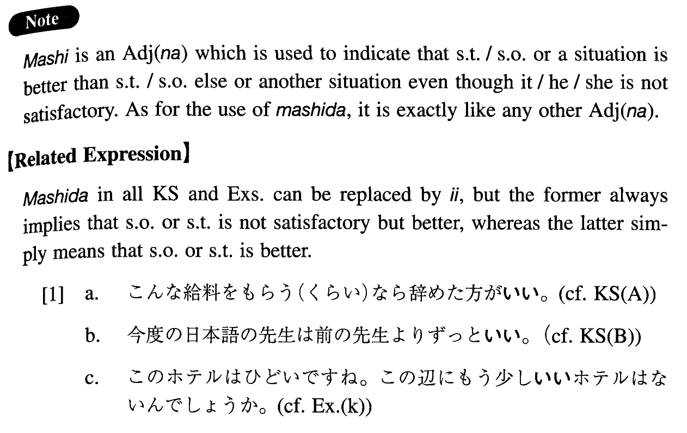

ましだ (I. 169)
- (ksa).
- こんな給料をもらう（くらい）なら辞めた方がましだ。
- If this is the salary, it would be better to quit.
- (ksb).
- 今度の日本語の先生は前の先生よりずっとましだ。
- This new Japanese teacher is much better than the former teacher.
- (ksc).
- もう少しましなコーヒーはありませんか。
- Isn't there coffee that's a bit better?
- (a).
- こんな大学に入るくらいなら、仕事をした方がましだ。
- I might as well work as enter such a college.
- (b).
- こんな苦しい生活をするくらいなら、死んだ方がましだ。
- It is better to die than to lead such a life.
- (c).
- 学校へ行くくらいなら家でテレビでも見ていた方がましだ。
- It's better to watch TV at home rather than going to school.
- (d).
- こんな不味いご飯を食べるくらいなら何も食べない方がいい。
- It's better not to eat anything rather than eating such an untasteful meal.
- (e).
- あのレストランよりこのレストランの方がましだ。
- This restaurant is better than that restaurant over there.
- (f).
- ここの夏も暑いですが、東京の夏よりましですね。
- Summer here is hot, too, but it's better than summer in Tokyo.
- (g).
- 僕の車もとても古いけど、君のよりましだ。
- My car is also very old, but it is better than yours.
- (h).
- 給料は二万円でも、ないよりましだ。
- Although the salary is just 20,000 yen it's better than nothing.
- (i).
- お宅は狭いと言っても私の家に比べたらずっとましですよ。
- You say your house is small, but it is much better than our house, you know.
- (j).
- もう少しましな人間になろうと思っています。
- I am thinking of becoming a slightly better person.
- (k).
- このホテルはひどいですね。この辺にもう少しましなホテルはないんでしょうか。
- This hotel is awful. Isn't there a slightly better hotel around here?
